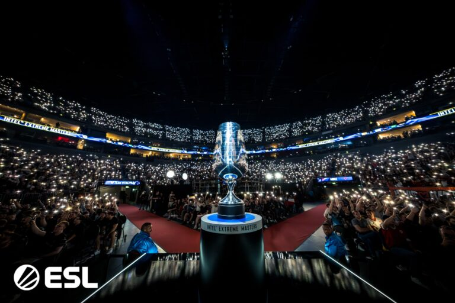

~120,000 Swiss tournaments, resolved. Per-team odds back-solved from live market prices, with the uncertainty shown, not hidden. The point isn't a pretty dashboard — it's a correct one.

Each team's chance to advance (3 wins before 3 losses), to run the table 3-0, and to crash out 0-3. Bars are telemetry — the bright band is sampling noise, the faint glow is the books disagreeing.
Point estimates are a live ██████ (██████, de-vigged) + █████ snapshot, back-solved and simulated. Round 1 is market-anchored; rounds 2–5 are projected from back-solved ratings, so deeper numbers are softer. Sampling (Wilson) noise is tiny at N≈120K — the wide faint box is the books disagreeing. Bands are scaled up for legibility; the live app derives epistemic width from real per-source variance.
Pick 2 to go 3-0, 6 to advance, 2 to go 0-3. Built to maximize one thing — P(≥5), the coin upgrade. That's not the most picks right on average, so it looks a little insane on purpose.
Every simulated tournament grades the ballot 0–10. Land ≥5 and the coin upgrades. The whole game is shoving as much of this distribution as possible past the line.
Every probability is validated against the Valve rulebook and a real past-Major backtest. No scraping — APIs only, fail-soft.
Round 1 is anchored to live market prices. Rounds 2–5 are projected from back-solved ratings, so deeper-round numbers are softer than R1.
A wide faint band means the books don't agree yet. That's shown on purpose — false precision is the enemy, not the goal.
This optimizes the Swiss 2/6/2 ballot. The playoff Pick'Em — a 7-pick round-weighted ballot — is not built yet.